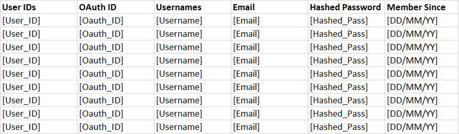
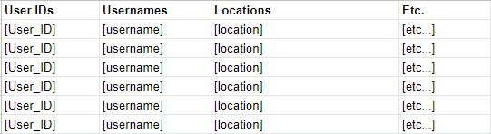
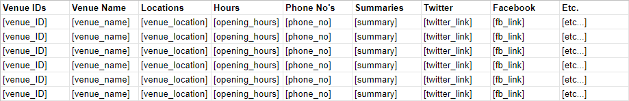
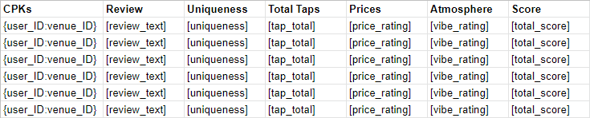
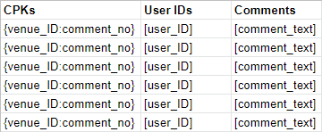
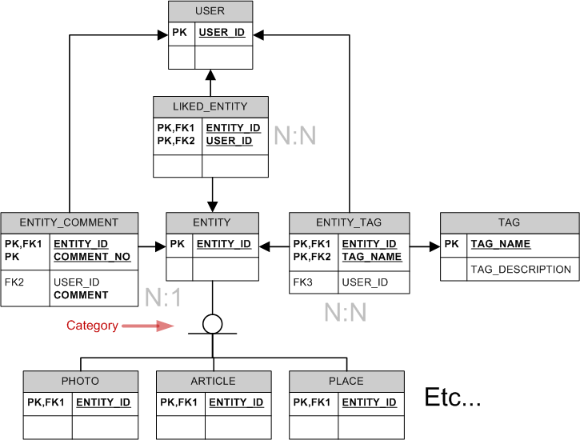

↸ Back to top
Plans and Progress
Initial Data Seeding
As the project's Phase 1 aim is limited to the Perth area, we must be able to provide data to the users to kickstart organic growth. Initially it was thought that web information could be scraped from a source like Google Maps, but this prompted some ethical considerations once it was realised that the same thing could happen with the data that we are holding. Consideration is given to budget when deciding how best to collect this data. Pursuit of Hoppiness is a small operation and can ill afford to send its staff out on beer hunting missions during the limited available time to produce a proof of concept product. A number of market research companies exist within the Perth area that support the hospitality sector. This work could be outsourced to a market researcher and then ingested into the database to provide a starting point for users.
Google Maps Technology
Selection
Google Maps is the preferred map application to use for this product. Google Maps is chosen as it is the most widely-supported across multiple platforms and most users will be familiar with its look and feel. It is important that we create a common feel for Pursuit of Hoppiness across all platforms.
Other considered options
Alternative map products such as Apple Maps and Bing maps were considered however they were discounted fairly early on. This was largely due to the requirement to reduce the need for different streams of development. As Google maps can be deployed with a similar look and feel across a variety of platforms, selecting Google Maps allows us to focus development in one area. As google maps is the most popular navigation app(Ceci, 2022), developers in the mobile space are also more likely to be familiar with the API.
Prototyping
In the initial prototype phase of the product we aim to deliver a small mockup based on static data showing the locations of a number of venues with a brief description. This will help us to decide what important bits of data we can safely display on a mobile device without the screen becoming cluttered.
For the purposes of the demo, the API key for Google Maps has been committed to the public repository. The mitigation for this risk is to heavily restrict the key in the Google Cloud Console to the HTTP referrer of the site. While this means that testing may be impacted between individual users, if they need to test on a local machine, they can replace the existing key with a private key of their own and enact their own controls to prevent pushing it to the repository.
The mockup data is currently static. For the closed alpha release the code will have to be developed to allow incorporation of data from the REST API.
The anticipated parameters in the request to the database for map data are Map Zoom Level and Map Centrepoint. This information will drive a query that will feed data back to the client using our API in a format like the following:
{
0: {
"venue": "Another Beer place",
"position": [-25.000, 153.000],
"unique_score": 5,
"tap_count": 4,
"pricing": 6,
"atmosphere": 8
}
}
Storing the unique score, pricing and atmospheres as integers will allow flexibilty going forward in how the information is presented to the user. For example, "atmosphere" with a value of 6 may be represented along a slider or by a colour scale dependinf on the direction chosen for the app based on feedback.
A demonstration of the map formatted as it would display on a mobile screen is provided.
Post Prototype
Post-prototype and for Phase 1 we aim to integrate this with data supplied from our backend database. This information will be fetched by the relevant frontend application using our API and then displayed on the device. As Google Maps supports a JSON input, this is what our API will provide. It is intended that the front end will provide the location of the map view; this will be passed to the database query which will return a dataset to be formatted into JSON with relevant information for display on the map.
Significant refinement of the mockup will be required to make it match up with the layout envisioned in the UI development section
Hosting
Early phases
For initial testing to reduce costs we have opted for a local machine to host the application data and to deliver the content, the "box under the desk" approach. A Virtual Private Server arrangement was investigated, but after comparing costs it was decided that a migration to an off-premises solution would only be appropriate after the completion of the closed alpha testing phase.
Once the decision is made to move to the open beta stage of development, the application data, content, and code will be moved to a cloud hosting provider such as Google. As our development will be completely containerised, it will be a trivial matter to migrate the entire project to a cloud hosting provider that best suits our needs.
Selection of a Cloud Service Provider
A variety of providers were investigated as were a number of ways of hosting Pursuit of Hoppiness. Between Platform as a Service and Infrastructure as a Service architecture it makes sense for us to adopt an IaaS setup as this will reduce our need to manage the operating system and instead focus on upkeep of the application and software supporting the application.
Google, Amazon, and Microsoft are the big names in this space all offering a product that meets our needs. They all also provide data centres located in Australia providing low latency times nationwide. Due to us already adopting Google maps as a service within Pursuit of Hoppiness, Google is a likely frontrunner for selection as it will allow us to keep all billing in one place and reduce complexity. While we must remain focussed on cost control it may be worth paying a small premium to reduce complexity and risk rather then increasing both to save a small amount.
Cloud migration
Our cloud migration signals a significant milestone for Pursuit of Hoppiness. This allows us to extend our reach and further reduce the risk of an outage affecting our users. Cloud migration is expected to be a quick process with the entire application and database being migrated over the course of a single day with minimum outage.
In summary, the application will first be developed on local machines, then hosted in-house for rapid testing of deployment pipelines and to reduce costs, then moved to a cloud hosted solution. This will all be based upon certain milestones being reached within the project.
OpenAuthorization & Logins
When creating an account with our service, we decided we would implement OpenAuthorization so as allow users to join the site through existing accounts such as Google, Facebook and Twitter. Users are also offered the choice to join our application via the standard procedure of creating an account through email and password.
(Refer to UX Prototype below)
Account Data Storage
OpenAuthorization Storage
When creating an account with our service using a third-party application and OpenAuthorization protocol, the third-party service that they sign up with (e.g. Google) will supply OpenAuthorization with an ID that which will be used to identify them via binding that OpenAuthorization ID to a user ID provided with our service.
Email and Password Account Storage
Users that which sign up with the standard account creation method of email and password will have their account's user ID attached to their email. Their hashed passwords will be stored alongside this information.
Both OpenAuthorization and regular sign ups will have their accounts creation date stored.

General Database Plans
User data is, of course, not the only type of data that needs storing. On the app's server side, we would need to be able to store multiple datapoints across several different areas in order to provide the users with all of the relevant information to let the app even function at all.
Initial Research
The first stage of the process was to identify the key areas that would require databasing in the first place. This is a step that necessarily gets pushed towards the later stages of development a little, as it is much easier to fit a database around a properly solidified application framework than it is for one to find themselves needing to expand or completely refactor the database in response to changing requirements.
The earliest identified points of interest were:
- User Accounts
- Venue Information
- User-submitted data (such as reviews)
These areas were also partially determined by further research into database creation and management. Similar projects were found to use a table for the basic user information, one for each venue's information, and then a network of multiple tables tied into these to store information about comments, tags, likes, and so on.
Database Structure
At its core, the database is a linked series of tables, each with referenced entries. For example, the user information table contains each user's unique ID - this is a string generated newly for each account upon creation and remains tied to it everywhere else in the application.

It then also holds smaller pieces of data that the user can submit on their profile page. This is things like a display username, possibly their set location (which the mapping function could then use if the user doesn't have location data turned on), small text fields with their interests, or an "about me" section, and so on.
It is a similar story when it comes to the venue information, albeit with more detailed extra columns:

Once again, each venue has a uniquely-generated ID. After that, this table can store the various set-in-stone elements of each venue - their contact information, socials, location, opening hours, and a short summary (possibly pulled from Google Maps API or user-submitted/reviewed).
Anytime something in the app needs to display relevant information about either users or venues, it sends a quick lookup request through to the database, uses the ID of the item to find it in the table, and then pulls out whichever datapoint is needed to display.
When an table item's ID is used like this, it's known as a Primary Key. The primary key is what keeps that particular entry identified as a point on that particular table. This then feeds forward into how things like reviews and comments can be stored.

This is how a table of user reviews would then look. Instead of its own generated ID as a primary key, a review uses a linked pair of the user ID leaving the review, and the venue ID that's receiving the review. These are known as "foreign keys" (as they are taken from a different table's primary keys), and the result is called a Composite Primary Key. The two immediate benefits to the Composite Primary Key system are firstly that having a user or venue ID as part of each CPK means that any other place using those IDs (such as a user or venue profile) can then display all reviews containing the relevant key, so visiting a user's profile can show all the reviews they have left, for example.
The second benefit is that each user/venue ID pair is treated as a unique key that can only exist in a single instance. Both to streamline the app and prevent "review bombing", a user cannot review a venue multiple times, only edit their previous review. This review entry in the table stores the various components, being the 5 categories as well as a text summary, and again is called by simple lookup requests.

The last example here is how a table would look for comments, or any similar "repeatable" entity that - unlike a review - may be left multiple times by a single user. In this instance, the CPK only takes in the Venue ID as a foreign key (the only part of it that can exist a single time), and pairs it with a generated comment ID primary key instead. In addition, the commenter's ID is stored but not in a unique referential format, so the same user ID can appear multiple times if needed.
This key-structuring technique is what forms the entire backbone of the database and can be extended to new tables with relative ease, while also providing a method for the rest of the app to communicate with it and quickly pull out relevant data with haste.
This diagram, by Branko Dimitrijevic, is a rudimentary outline of how similar social apps may structure themselves. The original source also contains another excellent introduction on how to create and structure databases in the style that our project largely draws from.

Image Credit: Branko Dimitrijevic, stackoverflow.com
Beyond the Scope/Chat Features
Moving forward, the app will start to include more social features such as, crucially, a chat/messaging service in order to connect with like-minded drinkers, creating a more satisfying experience for all involved. Tentative preliminary research into this area has yielded multiple different approach options for implementing such a feature, using tech stacks involving such things as MongoDB's NoSQL, or an extension on the current PostgreSQL implementation,, Nginx, or possibly integrated with AWS to take off some of the server slack on our side. From the storage half of the equation, depending on the level of security desired one can either store chat messages on the server in an NoSQL database or increase security by storing chat messages locally on user's devices, encrypting it before it is sent to the server and decrypted on the receiving device. Both of these options are worth considering for future social implementations.
User Experience and User Interface
UX (User experience design) and UI (User interface design) are two terms often used interchangeably and although the two are closely linked with some overlap, they are separate areas that have differences in goals and approach.
UX focuses on a user's journey through a product or application whereas UI focus on the aesthetics and visual elements of an application. The goal of a UX designer is to create an easy, efficient, relevant, and all-around pleasant experiences for the user (Lamprecht, 2022). UI designers work with the wireframe or structure provided by the UX designer and create a visually-appealing easy-to-understand interface (Career Foundry, 2021).
Initial Research
The first stage in development was choosing the tools and technologies to develop with. Research and comparisons of UI and UX development software led to a focus on Proto.io, InVision and Adobe XD due to their price, difficulty of use and time to master all being mid or low. After an hour of testing each piece of software, the decision was made to move forward with Adobe XD, primarily due to its integrations with other Adobe applications which weere already being used to create assets for The Pursuit of Hoppiness.
Before beginning on the wireframe for The Pursuit of Hoppiness, several tutorials were worked through to develop skills. Skills also significantly grew during the development process.
UX Planning
The goal of UX is to create an easy and efficient flow to allow users to complete their intended goals. The role can often be broken down into 5 phases: audience research, identification of users needs, generation of design ideas, prototyping and testing (Siang, 2021). We identified our target audience as craft beer drinkers and our research produced an audience profile of males primarily aged between 30 and 39 (Gjorgievska, 2021), with the need to find the right bar for them. This led to a more traditional design with an approach that minimized the clicks to view venue scores to one. Emphasis was also put on navigation within the app.

The home screen for existing users is the Map page. This screen initially centres on the user, giving them quick access to information on venues around them. It can be navigated similarly to other touch-based maps with pinching to zoom and swiping to move. Location can also be set using the search feature which has a text field for the search location and past searches. The List page presents venues based on distance. It can be filtered by our four review categories to raise/lower venues depending on preference. The account page allows users to view their past reviews, manage settings, and log out. When venues are clicked on the map or searched, they become centred on the map and give information on the venue as well as recent reviews.
Each page features a navigation panel that can be used to quickly move between the Profile, Map and List view.
UX Prototype
The wireframe was made using tools inside XD and the Icons 4 Design plugin. Development of the wireframe was also used as training in XD.
During development of the wireframe, swipe navigation was removed as it wasn’t supported by XD, and the Venue page was changed to a pop-up box map overlay instead of its own page.
UI Development
When developing the UI for The Pursuit of Hoppiness, emphasis was placed on consistency using already-established interface elements such as buttons and sliders as input controls, commonly used search field structures and map functionality, and use of already-established icons for common functions such as settings and notifications.
To keep the app consistent with existing branding, assets were reworked and expanded upon for use within the application. Some generic application symbols, such as the login, settings, notification and login icons, were taken from the Icons 4 Design plugin which allows non-attributed use of 5000 icons and symbols. These icons were colored to match the style guide.
Initial mock-ups of the UI were created in Adobe Illustrator and then imported into the wireframe XD file and worked to replace the wireframe icons. During this process changes were made to the UI and UX to improve functionality. This included moving the radius slider from Search to List and adding additional lines to create breaks between sections. Additionally, extra artboards were added to add filter functionality for the prototype.
Final Prototype
The current prototype demonstrates the UI and UX of the application well, with several limitations as a result of XD; limitations that will be addressed in future prototypes are editable text fields, active sliders, dynamic map and the addition of additional filters (currently only Tap Price is active).
Following feedback from the development team the bottom navigation bar will be moved up to allow room for phone navigation icons/buttons, phone battery, time and connection icons will be added to the top of the application, and the size and amount of text will be reviewed.
Next Stages
The current prototype was designed as per the scope for a minimum viable product and is missing major features that would significantly change the app UX and UI. The two biggest changes would come from the addition of Social Features and Venue Management Features.
Social features including friends, messaging and an activity timeline would be accessible through the navbar and would replace the current list button, which would be relocated as a smaller icon next to the search field. This feature would add an additional 5 major screens: Timeline, Friends, Friend Profile, Chat Home and Chat. The UI and layout of these screens will be consistent with the application in line with the style guide and keeping the bottom navigation. Navigation features specific to the social features will be located at the top of the page.

The venue management features will require a significantly different interface and will be a web portal rather than an app. Initially the features will be limited to the ability to edit their venue description and opening hours, reply to comments and view statistics on venue reviews. These features can be introduced with minimal changes in the app UI but future development including a venue timeline and the ability for patrons to make purchases in app will require a rework of the venue page.
References:
Career Foundry, 2021. UX Design vs UI Design - What's The Difference?. [video] Available at: [Accessed 2 February 2022].
Gjorgievska, L., 2021. Australian Beer Market Statistics That Raise the Bar. [online] Take a Tumble. Available at: [Accessed 2 February 2022].
Lamprecht, E., 2022. UX vs. UI Design: What's the Difference? [2022 Guide]. [online] CareerFoundry. Available at: [Accessed 1 February 2022].
Siang, T., 2021. 7 UX Deliverables: What will I be making as a UX designer?. [online] The Interaction Design Foundation. Available at: [Accessed 3 February 2022].
Ceci, L., 2022. Top U.S. mapping apps by downloads 2021 | Statista. [online] Statista. Available at: https://www.statista.com/statistics/865413/most-popular-us-mapping-apps-ranked-by-audience/ [Accessed 19 February 2022].